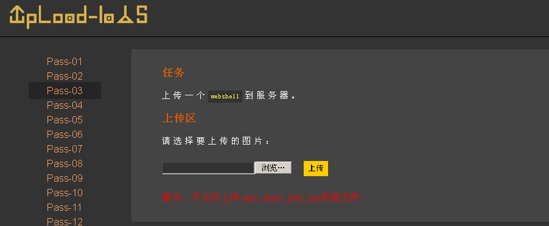

phtml解析审计+绕过
# phtml 解析审计 + 绕过
总结一下对于以下四种文件类型，可能的绕过方式：
.asp:.asa/.cer/.cdx.aspx:.ashx/.asmx/.ascx.php:.php4/.php5/.pthml.jsp:.jspx/.jspf
# pthml 解析审计
其中，关于 pthml 可以去看一下 C:\phpStudyB\Apache\conf\httpd.conf 文件中对于 php 文件类型的解析
这里 .pthml 后缀的文件可以被后台解析成 .php
我们以 Pass-03 为例：
上传 backdoor.php，点击上传后，显示 “不允许上传.asp, .aspx, .php, .jsp 后缀文件！”

OK，我们看一下源码信息：
$is_upload = false; |
以上代码核心干了这么几件事：
当文件上传路径存在时
- 设置黑名单，过滤
.asp,.aspx,.php,.jsp trim()函数过滤上传文件名的空格deldot()函数删除文件名最末尾的点【这是一种绕过方式，后面的博客会介绍到】strrchr()函数以.点为截断符，获取其右边的字符串，即获取文件后缀名strtolower()函数将文件后缀名全部转换成小写str_ireplace()函数将去除后缀名当中的::$DATA，是一种 Windows 本地文件系统中的文件流，也是一种绕过方式- 再次调用
trim()函数对后缀名进行去空格
另外， $img_path 这回使用了 date函数及其格式化 ，再使用了 1000-9999的随机数 作为路径名的组成部分。
date () 函数的第一个必需参数 format 规定了如何格式化日期 / 时间。
可以在字母之间插入其他字符，比如 “/”、"." 或者 “-”，这样就可以增加附加格式了
|
这里列出了一些可用的字符：
-
Y - 代表年 （四位，如 2022）
-
m - 代表月 （01 到 12）
-
d - 代表月中的天 （01 到 31）
-
H - 小时，24 小时格式，有前导零 （00 到 23）
-
i - 有前导零的分钟数 （00 到 59）
-
s - 秒数，有前导零 （00 到 59）
# pthml 解析绕过
审计完上述代码，发现对于文件后缀并没有过滤完整，放出了诸如 php4、php5、pthml 的类型
抓包，送入 Repeater
# 尝试一：修改为.php4
修改为
filename="backdoor.php4" |
上传成功
打开页面看看，但并没有解析成 php 执行。
# 尝试二：修改为.php5
filename="backdoor.php5" |
上传成功
我们打开网页看看，依旧没有解析成功
# 尝试三：修改为.phtml
filename="backdoor.phtml" |
上传成功
打开网页看看，没有原样输出，成功解析。

使用菜刀连接：
①清空缓存库
②添加，输入刚刚上传的后门 url，添加参数
双击，成功连接。
另外，由于解析源码中只罗列了 .php , .phtml ，我们可以添加 .txt 或者 .abcd 都可以。
只要写入了支持解析的类型，重启 Apache 服务，黑客就可以上传对应的后门文件，进行菜刀连接。
至此，演示完毕。